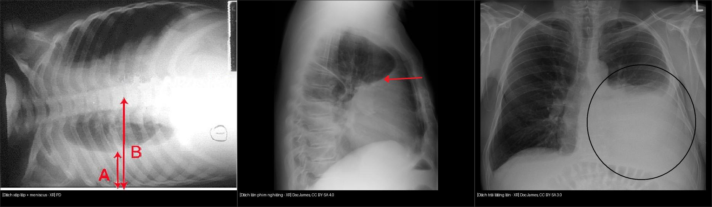
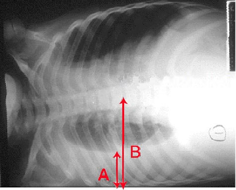

040 — Tràn dịch màng phổi / Pleural effusion
Tags: pattern:tran-dich vung:mang-phoi
Mức chắc chắn (certainty): tổng hợp y văn (literature synthesis) — nhóm tự biên từ y văn mở, chưa gắn ca nguyên văn đơn lẻ.
1. Tổng quan — dịch ở đâu, vì sao trắng
- Khoang màng phổi (pleural space) bình thường chỉ có vài mL dịch bôi trơn. Dịch tích lại khi tăng tạo (tim, viêm, u, tắc bạch huyết) hoặc giảm hấp thu. Dịch tự do (free fluid) chảy theo trọng lực: đứng → đáy + góc sườn hoành; nằm → lớp sau lưng (chụp nằm thấy phổi "mờ đều" giả).
- TẠI SAO trắng: dịch cùng đậm độ mô mềm → che góc sườn hoành, tạo meniscus (mặt khum lõm lên trên) ở phim đứng — khác với dày màng phổi. Phân biệt thấm/tiết (transudate/exudate) bằng Light (protein/LDH dịch/máu) trên chọc dịch, không phân biệt được chắc chắn chỉ bằng hình ảnh.

Nguồn: PD + Doc James CC BY-SA. Ảnh ghép letterbox. Chi tiết xemimages/CREDITS.md.
2. Gamut theo phân bố
- Tự do 1 bên: suy tim (thường phải), viêm phổi cạnh (parapneumonic), u (ác tính, di căn), tắc mạch phổi (nhồi máu kèm).
- 2 bên: suy tim, suy thận, giảm albumin — nghĩ toàn thân trước.
- Khu trú (loculated)/rãnh liên thùy: viêm cũ, mủ màng phổi (empyema), chấn thương; giả u (pseudotumor) nằm gọn trong rãnh — tan khi hết suy tim.
- Kèm khí (hydropneumothorax): mức khí-dịch (air-fluid level) ngang — khác meniscus cong.
3. Bảng so sánh phân biệt
| Thực thể (entity) | Hình ảnh điển hình | Chốt vào (rule-in) | Chốt loại (rule-out) | Gợi ý xác nhận |
|---|---|---|---|---|
| Dịch tự do (free effusion) | Tù góc sườn hoành, meniscus cong lõm lên, phim nghiêng/decubitus dịch di chuyển | Lớp dịch di động theo tư thế trên decubitus/POCUS | Không di chuyển + bờ lồi → nghĩ khu trú/dày màng | Siêu âm tại giường, chọc dịch (Light) |
| Dày/dính màng phổi (pleural thickening) | Vệt trắng sát thành ngực, góc tù | Không đổi theo tư thế, bờ trong lồi | Meniscus di động → dịch tự do | CT cửa sổ trung thất, tiền sử lao/mủ cũ |
| Xẹp thùy dưới + dịch ít | Mờ đáy + mất thể tích | Di lệch rãnh + trung thất kéo về (xem bài 030) | Meniscus thuần không mất thể tích → dịch đơn thuần | CT phân giải |
| Mủ màng phổi (empyema) | Dịch khu trú + dày lá thành, tách đôi (split pleura sign trên CT) | Sốt + dịch vách hóa (septation) trên siêu âm | Dịch trong, không vách, hết khi điều trị suy tim | Dẫn lưu + kháng sinh |
4. Protocol
- X-quang đứng PA + nghiêng (lateral): nghiêng nhạy hơn (thấy ~50 mL ở góc sau); phim nằm ngửa cần ≥ 200–300 mL mới mờ một bên.
- Decubitus (nằm nghiêng bên bệnh): lớp dịch ≥ 10 mm đo được → chọc được an toàn.
- Siêu âm màng phổi (POCUS): phân biệt dịch tự do/vách hóa, hướng dẫn chọc — làm tại giường.
- CT có cản quang: nghi empyema (split pleura), u màng phổi, dịch khu trú khó chọc.
5. Biến thể bình thường và cạm bẫy + Dịch màng phổi vs cổ trướng trên CT ngang
- Mỡ ngoài màng phổi (extrapleural fat): vệt mờ đối xứng người béo — đừng đọc dịch 2 bên.
- Phim AP nằm: một bên trắng đều do dịch lớp sau — so sánh 2 bên + chụp decubitus xác nhận.
- Giả u trong rãnh (pseudotumor): khối thấu kính trong rãnh liên thùy ở BN suy tim — tan sau lợi tiểu, đừng sinh thiết vội.
- Nếp da/tóc dài: đường thẳng ra ngoài thành ngực — đừng đọc tràn khí kèm.
- Định lượng HU dịch: dịch thấm ~0–15 HU; dịch tiết cao hơn; máu màng phổi (hemothorax) 35–70 HU — đo HU trước khi gọi tên dịch.
Phân biệt dịch màng phổi vs cổ trướng (ascites) trên CT cắt ngang
Cùng là dịch, vị trí tương đối với cơ hoành mới quyết định tên:
- Dấu crus lệch (displaced crus sign): dịch màng phổi nằm sau-trong, đẩy trụ cơ hoành (crus) ra trước, tách khỏi cột sống; cổ trướng ôm gan/lách, crus vẫn áp cột sống.
- Dấu bare area: dịch ở vùng trần của gan phải (bare area — ngoài phúc mạc, cổ trướng không vào được) = tràn dịch màng phổi.
- Meniscus vs ôm tạng: dịch màng phổi tạo mặt khum + khu trú trên vòm hoành; cổ trướng lan quanh gan/lách, vào rãnh Morrison, dưới vòm hoành.
6. Tự lượng giá — Blind Quiz
Ca 1 — Nhìn phim dưới, mô tả trước khi mở đáp án.

- Hỏi: dịch bên nào? Tự do hay khu trú? Dấu meniscus có không? Bước tiếp theo?
Bấm để hiện đáp án
- Dấu hiệu: mờ đáy phổi phải, mặt khum meniscus, mũi tên A chỉ dịch xếp lớp (layering) — dịch tự do.
- Chẩn đoán: tràn dịch màng phổi phải tự do. Bước tiếp: siêu âm + chọc dịch làm Light.
- Nguồn: Wikimedia Commons, public domain.
Ca 2 — So sánh phim nghiêng vs phim đứng: mở 040_trandich-nghieng_XR_Wikimedia-DocJames-CCBYSA40.png (nghiêng) và 040_trandich-lon_XR_Wikimedia-DocJames-CCBYSA30.png (đứng, dịch trái lớn). Cái nào thấy dịch ít nhạy hơn? Vì sao phim nghiêng phát hiện sớm?
Bấm để hiện đáp án
- Phim nghiêng nhạy hơn (góc sườn hoành sau sâu, thấy từ ~50 mL). Dịch lớn làm mờ toàn bộ nửa ngực + đẩy trung thất.
Bài liên quan chéo
- 001 – Tổng quan hệ Ngực
- 010 – Giải phẫu ngực cắt lớp
- 079 – Tràn dịch dưỡng trấp (chylothorax) — dịch sữa: TG 110, pseudochylothorax & bậc thang điều trị
- 030 – Đông đặc – xẹp phổi (phân biệt dịch vs xẹp đáy)
Không dùng để chẩn đoán độc lập khi chưa có người hướng dẫn.